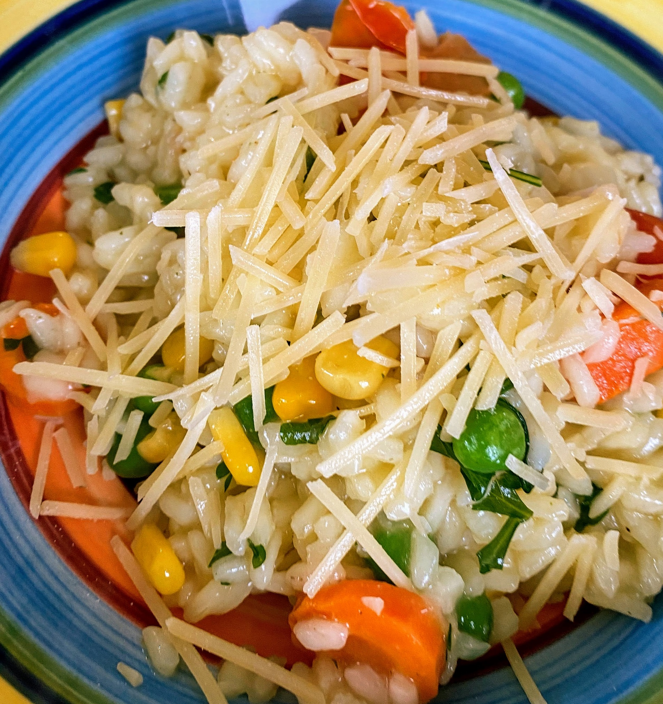

Apple Cinnamon Loaf
 Meat
Meat

- 1tsp ground cinnamon
- 1/3 brown sugar
Preheat oven to 175 degrees Mix cinnamon and sugar together and set aside —
- 3/4 cup white sugar
- 1/2 cup margarine
- 2 eggs
- 1 1/2 tsp vanilla essence
Beat margarine and sugar until fluffy Beat eggs, onat a time into mixture Add vannilla
- 1 1/2 cups plain flour
- 1 3/4 tsp baking powder
Combine flour and baking powder
- 2 green apples, diced
Pour half of mixture into loaf tin Add half diced apple and cinnamon sugar, pat into mixture Pour remaining mixture in and top with remaining apple and cinnamon sugar Bake for 35-45 mins